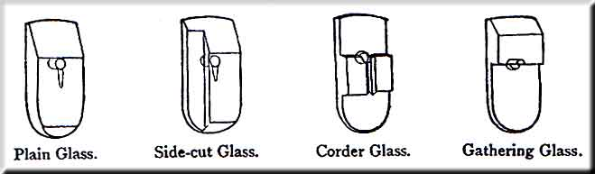
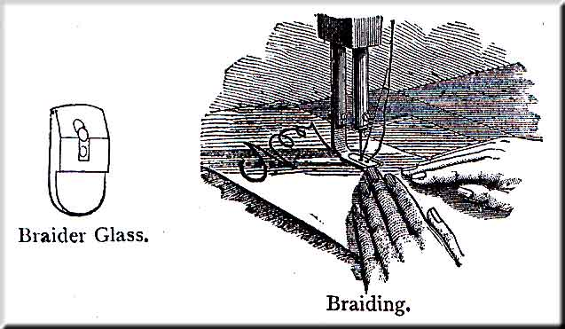
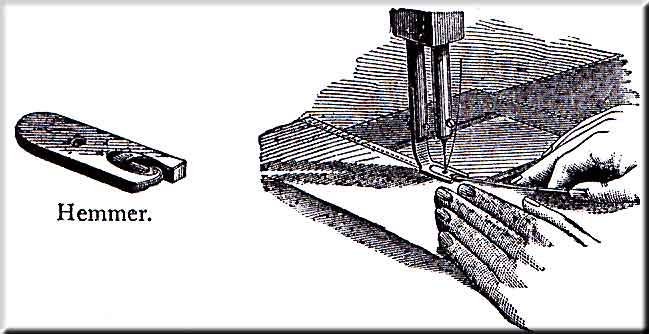
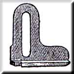
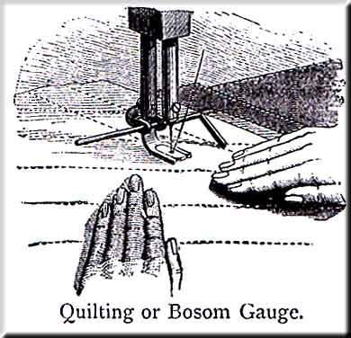

To Turn a Corner -- Stop the machine with the needle in the cloth, after it has been down and come partly up. Then lift the presser-foot, and turn the work in the manner desired, using the needle as a pivot.
To Swing the Presser-foot out of the way -- for any purpose, turn the machine to raise the needle to its highest pint, raise the presser with the thumb and finger, and turn it around to the right.
Needles may be Sharpened -- on the emery wheel by placing it on the spooler-spindle. Grind the point long and tapering.
The Belt -- should be only tight enough to move the machine without slipping. Should it become too loose, a piece must be cut out near the belt hook, and another hole made and hooked again.
For ordinary purposes the belt should pass around the smaller part of the band wheel and the larger part of the balance wheel. To obtain more power for heavy work, or to have the machine run easier, place the belt in the other groove of both wheels.
To Clean the Machine -- Remove the front and back plate slides, throat-plate, and the bobbin-holder, and wipe off all the parts; particularly about the needle-bar, rotating hook, and feed. In replacing the bobbin-holder, be sure and push it as far to the right as it will go, and turn the screw down tightly with the screw-driver. After cleaning, oil as before directly.
If the machine has been neglected and has become gummed, use kerosene oil or turpentine, and wipe thoroughly to remove all old oil and dirt, after which use sewing machine oil as usual.
Causes of the Machine not working properly -- will usually be found in the tension not being properly adjusted, the thread being too coarse for the needle, the needle and thread too coarse for the throat-plate, or in the needle being bent, blunted, or imperfectly set. See that the needle is pushed up as far as it will go into the needle-bar, and that it goes perfectly true through the hole in the throat-plate. If it does not, spring the point in the requisite direction, till it goes all the way alike.
If the machine misses stitches when using hard twisted cotton thread, loosen the set screw and turn the long groove of the needle slightly towards you (to throw the loop more directly in front of the rotating hook).
Do not let the thread check, or the groove in the tension-pulley become clogged with lint, dirt, or knots of thread.
In using fine silk, should it slip around the tension-pulley without turning it, wind it twice or more times around the pulley.
Do not let the guide-roller, or the roller in the upper end of the take-up, become clogged, but frequently oil the screws on which they turn, so that they may turn freely.
To adjust the Feed -- Should the feed-bar be worn down by long use, it may be raised by turning the middle screw in the feed point, with the screw-driver on the small steel wrench. Turning to the right will raise, and to the left will lower the point.
It should never rise more than one thirty-second of an inch above the plate, or enough to raise the hemmer slightly.
The feed is always adjusted properly when the machine leaves the office.

The Plain Glass is for all ordinary sewing and stitching.
The Side-Cut Glass is for stitching close to, and parallel with very thick seams, and also to be used with the plate gauge, for narrow tucking, etc., where it is desirable to place the gauge very near the needle.
To Cord with the Corder Glass -- Insert the corder glass into the presser-foot. Place the cord between the cloth where you desire to stitch it, and crowd it into its place as close as possible with the point of the scissors or some similar instrument, by rubbing it along near the cord on top of the cloth. Place the work under the presser-foot, with the cord in the crease in the bottom of the glass, and stitch as usual.
To Gather -- Insert the gathering glass into the presser-foot; use for the upper thread a much larger one than usual, say No. 36 for ordinary muslin, while you use the ordinary size, say 70, below. Make the tension of the upper thread tight, and that of the under thread as loose as possible; stitch the cloth where it is to be gathered, regulating the fulness by means of the feed; the longer the stitch the greater will be the fulness. If the fulness is too great even with the shortest stitch, reduce the upper tension. If desirable in any case sew with threads as above, with the upper tension only tight enough to gather the work slightly, and finish by drawing up the upper thread by hand.

To Braid -- Insert the braider glass in the presser-foot, pass the braid through the extra hole and under the needle, so that it may pass through it, and stitch the fabric where you wish to lay the braid. By having a pattern first stamped or marked upon the goods, the braid may be stitched on in beautiful designs.

To Hem -- Insert the hemmer in place of the glass. Roll the corner of the cloth slightly, enter it into the scroll of the hemmer, and draw it along to the needle, and proceed to stitch as usual, and the hemmer will turn the hem; keep the edge of the cloth in the hemmer only far enough to surround the tongue within the scroll, as if too much or too little is kept in the hemmer it will leave a raw edge. If the seam is not on the edge of the hem, it is probably because the needle is bent, in which case spring it till it is perfectly true. If it does not then strike the hem right, it is because the presser-bar has been turned, in which case loosen the screw which holds the bar from turning, and move the hemmer slightly in the direction required, and tighten the screw again firmly.
The hemmer is always in proper position when sent out, so that the needle will strike the hem in the proper place; and the bar should not be moved unless rendered necessary by accident.
To make a wide hem, fold the cloth over to the width of the hem desired, crease it down smoothly, and pass the edge through the hemmer, which will turn the edge under while it is being stitched down.
To Fell with the Hemmer -- First seam up the two edges, one a little wider than the other; a good rule for getting them of the proper width is to keep the edge of the upper piece of cloth under the notch in the end of the hemmer, and let the under piece project beyond the upper as far as the side of the hemmer. Then open the cloth and pass it under the presser-foot, allowing the raw edge to pass through the hemmer, which will turn it under as in hemming. Nearly the whole secret in felling is in getting the edges the proper width in sewing the first seam.
The Plate Gauge -- is attached to the plate by means of the extra thumb-screw, and is used for stitching at a regular distance from an edge.
To Quilt -- Attach the quilting gauge to the presser-foot, as seen in the cut, and adjust it to the width desired.
Let the finger of the gauge rest upon the cloth-plate for a guide while stitching the first seam, then raise the finger enough to let the quilt pass under without touching, and keep the seam last stitched directly under the finger, to insure the seams being equal distances apart.
To Stitch Shirt Bosoms -- Set the gauge as far from the needle as you wish to have the stitching from the edge of the fold or plait, and guide the work so that the edge of the plait will follow the gauge.
.